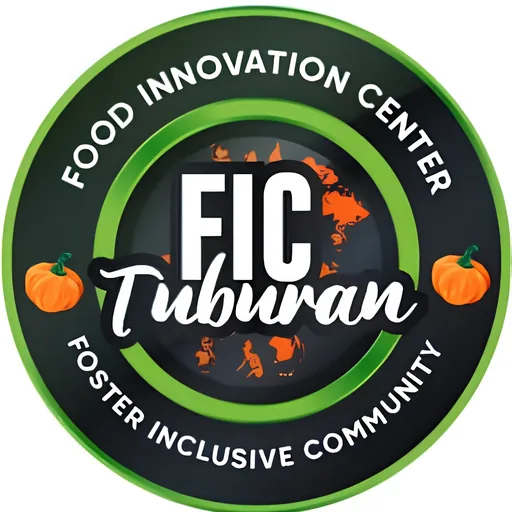

Food Innovation Center — CTU Tuburan
Cebu Technological University · Region VII
The Cebu Technological University Tuburan Food Innovation Center (CTU-TC FIC) is a food innovation and R&D hub established at CTU's Tuburan Campus in northern Cebu through the Department of Trade and Industry's University Shared Facility (USF) Program. The center is anchored within the Institute for Food Science, Innovation and Technopreneurship (IFSIT), which was established at CTU Tuburan in 2019, with the USF Food Innovation Center formally opened on December 10, 2021.
- Category
- Food Innovation Center
- Host institution
- Cebu Technological University
- City
- Tuburan, Cebu
- Region
- Region VII
- Operating status
- Operating
About the Center
The CTU-TC FIC serves as a hub for innovations and R&D focused on value-adding fresh produce and developing processed food products. Its modern equipment suite — headlined by a vacuum fryer — enables production technologies typically inaccessible to small enterprises in Tuburan and northern Cebu, allowing MSMEs to develop higher-value, market-ready food products. The center supports DTI's national MSMED program objectives: enabling MSMEs to scale productivity, accelerate competitiveness through technology access, and integrate into wider supply chains.
The facility is open to MSMEs developing new products, academic researchers and students conducting food R&D, and private sector entities testing product concepts or ideas. It also serves as a demonstration and instructional facility for students from CTU-Tuburan and partner Higher Education Institutes, as well as for training industry personnel and government food technology practitioners.
Programs & Services
- Product and process R&D for value-adding fresh produce and developing new processed food products
- MSME technology access — modern food processing equipment including vacuum fryer, enabling production beyond traditional small-enterprise capacity
- Product concept testing — private sector access to test and validate food product ideas in a shared facility setting
- Demonstration and instructional facility for students from CTU-Tuburan and partner Higher Education Institutes
- Training programs for industry personnel and government food technology practitioners in northern Cebu
- MSME competitiveness support under DTI's USF framework: equipment access, upskilling, and support for graduating MSMEs to wider markets
- Convergence platform for pooled government resources targeting the food processing value chain in the Tuburan area and northern Cebu
Contact
Sources & references
- ctu.edu.ph/tuburan/research/usf/food-innovation-center
- ctu.edu.ph/2022/01/food-innovation-center-launched-in-ctu-tuburan
- ctu.edu.ph/center-for-food-development-and-technopreneurship-ifsit
Details are drawn from public records and the sources above, July 2026.
Startupreneur Innovation Hub · synced from the Notion catalog (July 2026) · status: published.